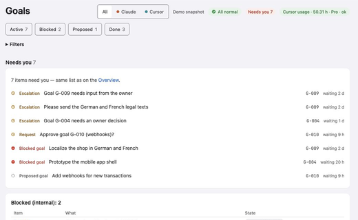

Factory model / Overview
What is a
software factory?
A fixed team of agents takes a goal through implementation, checks and a merge decision on a machine you own.
Follow the production lineHow the work moves
One goal.
Several owners.
You describe the outcome to the boss. The factory keeps the plan and the work on a separate Linux host, so you can close your laptop and return to the record.
- Ask The boss records the intent and success criteria. A director and lead organize a team and turn the goal into tasks.
- Build A coder opens a pull request from a dedicated worktree and branch.
- Check One agent reviews the diff. A different agent runs tests against the acceptance criteria.
- Merge The judge checks the verdicts and the pull request. Failed checks return the change to the coder with findings.
The factory record
Come back to
the evidence.
Goals, tasks, messages and verdicts are stored in SQLite with an append-only event log. Open a goal to read its intent, trace its tasks and see the criteria they address.
Browse the demo goals
Deployment
Your host.
Your workflow.
The factory runs on Debian or Ubuntu. Its default organization uses Claude Code, with a separate Cursor organization available on the same machine. Each runtime uses its model provider.
The catalog contains the roles, skills and plugins you can adapt for your own workflow.
Browse the catalog